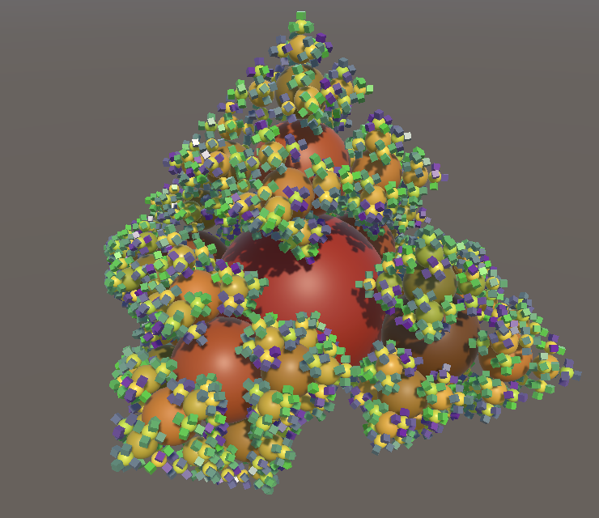

Organic Variety
Making the Artificial Look Natural
- Color the fractal based on depth.
- Apply random sequence-based variety.
- Introduce leaves that look different.
- Make the fractal sag as if by gravity.
- Add variety to spin and sometimes reverse it.
This is the seventh tutorial in a series about learning the basics of working with Unity. In it we'll adjust our fractal so it ends up looking more organic than mathematical.
This tutorial is made with Unity 2020.3.6f1.
Color Gradient
The fractal that we created in the previous tutorial is obviously a result of applied mathematics. It looks rigid, precise, formal, and uniform. It doesn't look organic, nor alive. However, with a few changes we can make the mathematical appear organic, up to a point. We do this by introducing variety and apparent randomness, along with simulating somewhat organic behavior.
The most straightforward way to make our fractal more varied is by replacing its uniform color with a range of colors, and the simplest approach is to base this on the level of each drawn instance.
Overriding Color
We previously gave both our BRP surface shader and URP our shader graph have a Base Color property that we currently configure by adjusting the material, but we can override it via code. To do this keep track of its identifier in Fractal.
static readonly int
baseColorId = Shader.PropertyToID("_BaseColor"),
matricesId = Shader.PropertyToID("_Matrices");
Then invoke SetColor on the property block in the draw loop inside Update. We start by setting the color to white, multiplied with the current loop iterator value divided by the buffer length minus one. This will make the first level black and the last level white.
for (int i = 0; i < matricesBuffers.Length; i++) {
ComputeBuffer buffer = matricesBuffers[i];
buffer.SetData(matrices[i]);
propertyBlock.SetColor(
baseColorId, Color.white * (i / (matricesBuffers.Length - 1))
);
propertyBlock.SetBuffer(matricesId, buffer);
Graphics.DrawMeshInstancedProcedural(
mesh, 0, material, bounds, buffer.count, propertyBlock
);
}
To give all intermediate levels a shade of gray this has to be a floating-point division, not an integer division which has no fractional part. We can ensure this by making the subtraction by one in the divisor a floating-point subtraction. The rest of the calculation then becomes floating-point as well.
propertyBlock.SetColor( baseColorId, Color.white * (i / (matricesBuffers.Length - 1f)) );
If using URP, make sure that the reference of the color is set to _BaseColor.
The result is a grayscale fractal, going from black at its root instance to white at its leaf instances, both in BRP and URP.
Note that the subtraction by one in the divisor is needed to reach white at the deepest level. But if the fractal's depth is set to 1 this would result in a division by zero and thus an invalid color. To avoid this we should increase the minimum depth to 2.
[SerializeField, Range(2, 8)] int depth = 4;
Interpolating Between Colors
We're not limited to only grayscale or monochrome gradients. We could interpolate between any two colors, by invoking the static Color.Lerp method with two colors and the factor that we used earlier as its interpolator. This way we can create any two-color gradient in Update, for example from yellow to red.
propertyBlock.SetColor( baseColorId, Color.Lerp( Color.yellow, Color.red, i / (matricesBuffers.Length - 1f) ) );
Configurable Gradient
We can go a step further and support arbitrary gradients that could have more than two configured colors and also an uneven distribution. This is done by relying on Unity's Gradient type. Use it to add a configurable gradient to Fractal.
[SerializeField] Material material; [SerializeField] Gradient gradient;
To use the gradient replace the invocation of Color.Lerp in Update with an invocation of Evaluate on the gradient, again with the same interpolator value.
propertyBlock.SetColor( baseColorId, gradient.Evaluate(i / (matricesBuffers.Length - 1f)) );
Arbitrary Colors
A fractal colored with a gradient looks more interesting than one with a uniform color, but its coloration is obviously formulaic. Organic things usually have some variety in coloration that is—or appears to be—random. For our fractal this would mean that individual mesh instances should exhibit variety of color.
Color Shader Function
To do the work for both our surface shader and shader graph at the same time, we will provide the instance color via our FractalGPU HLSL file. Start by declaring the _BaseColor property field in there, followed by a GetFractalColor function that simply returns the field. Place it above the shader graph functions.
float4 _BaseColor;
float4 GetFractalColor () {
return _BaseColor;
}
void ShaderGraphFunction_float (float3 In, out float3 Out) {
Out = In;
}
Then remove the now redundant property from the surface shader and invoke GetFractalColor inside ConfigureSurface instead of directly accessing the field.
//float4 _BaseColor;float _Smoothness; void ConfigureSurface (Input input, inout SurfaceOutputStandard surface) { surface.Albedo = GetFractalColor().rgb; surface.Smoothness = _Smoothness; }
As we're no longer relying on the material inspector to configure the color we can also remove it from the Properties block.
Properties {
//_BaseColor ("Albedo", Base Color) = (1.0, 1.0, 1.0, 1.0)
_Smoothness ("Smoothness", Range(0,1)) = 0.5
}
We'll expose the fractal color to our shader graph by adding an output parameter to the shader graph functions that we created for it.
void ShaderGraphFunction_float (float3 In, out float3 Out, out float4 FractalColor) {
Out = In;
FractalColor = GetFractalColor();
}
void ShaderGraphFunction_half (half3 In, out half3 Out, out half4 FractalColor) {
Out = In;
FractalColor = GetFractalColor();
}
In the shader graph itself we first have to remove the Base Color property. It can be deleted via its context menu, opened by right-clicking on its label in the blackboard.
Then add the output to our custom function node.
And finally connect the new output to the Base Color of the Fragment node.
Basing Color on Instance Identifier
To introduce variety per instance we have to somehow make GetFractalColor depend on the instance identifier of what's being drawn. As this is an integer that increases from zero, the simplest test would be something like returning the instance identifier scaled down by three orders of magnitude, resulting in a grayscale gradient.
float4 GetFractalColor () {
return unity_InstanceID * 0.001;
}
But now we also have to make sure that we access the instance identifier only for shader variants that have procedural instancing enabled, like we did in ConfigureProcedural.
float4 GetFractalColor () {
#if defined(UNITY_PROCEDURAL_INSTANCING_ENABLED)
return unity_InstanceID * 0.001;
#endif
}
The difference in this case is that we always have to return something, even though that might not make much sense. So we'll simply return the configured color for non-instanced shader variants. This is done by inserting an #else directive before #endif and returning the color in between.
#if defined(UNITY_PROCEDURAL_INSTANCING_ENABLED) return unity_InstanceID * 0.001; #else return _BaseColor; #endif
This illustrates that the approach works, even though it looks terrible. We can make the gradient sensible by—for example—repeating it every five instances. To do this we'll use the instance identifier modulo five, via the % operator. That turns the identifier sequence into the repeating sequence 0, 1, 2, 3, 4, 0, 1, 2, 3, 4, etc. Then we scale that down to a quarter so the range changes from 0–4 to 0–1.
return (unity_InstanceID % 5.0) / 4.0;
The resulting coloration already appears arbitrary on first casual inspection, even though the gradient loops regularly, because it doesn't exactly match the geometric structure of the fractal. The only really obvious pattern is that the central column is always black, because it consists of the first instance of each level. This phenomenon also manifests itself at deeper levels when the sequence aligns with geometry.
We can change the pattern by adjusting the length of the sequence, for example increasing it to ten. This adds more color variation and makes the black columns occur less often, although this does make them stand out more.
return (unity_InstanceID % 10.0) / 9.0;
Weyl Sequences
A slightly different way to create a repeating gradient is to use a Weyl sequence. Simply put these are sequences of the form 0X modulo 1, 1X modulo 1, 2X modulo 1, 3X modulo 1, and so on. Thus we only get fractional values, which fall in the 0–1 range, exluding 1. If X is an irrational number then this sequence will be uniformly distributed in that range.
We don't really need a perfect distribution, only enough variety. A random value in the 0–1 range will do for X. For example, let's consider 0.381:
0.000, 0.381, 0.762, 0.143, 0.524, 0.905, 0.286, 0.667, 0.048, 0.429, 0.810, 0.191, 0.572, 0.953, 0.334, 0.715, 0.096, 0.477, 0.858, 0.239, 0.620, 0.001, 0.382, 0.763, 0.144, 0.525.
What we get is repetitions of mostly three-step but sometimes two-step increasing gradients that are all a bit different. The pattern repeats after 21 steps, but shifted by 0.001. Other values will produce different patterns, with different gradients that can be longer, shorter, and reversed.
In the shader we can create this sequence with a single multiplication and feeding the result to the frac function.
return frac(unity_InstanceID * 0.381);
Random Factor and Offset
The result of using a fractional sequence looks acceptable, except that we still get those black columns. We can get rid of those by adding a different offset per level to the sequence, and can even use a different sequence per level. To support this, add a shader property vector for two sequence numbers, the first being a multiplier and the second being an offset, then use those in GetFractalColor. The offset must be added before isolating the fractional part of the value, so it applies a wrapped shift to the sequence.
float2 _SequenceNumbers;
float4 GetFractalColor () {
#if defined(UNITY_PROCEDURAL_INSTANCING_ENABLED)
return frac(unity_InstanceID * _SequenceNumbers.x + _SequenceNumbers.y);
#else
return _BaseColor;
#endif
}
Keep track of the shader property's identifier in Fractal.
static readonly int
baseColorId = Shader.PropertyToID("_BaseColor"),
matricesId = Shader.PropertyToID("_Matrices"),
sequenceNumbersId = Shader.PropertyToID("_SequenceNumbers");
Then add an array of sequence numbers per level, initially set equal to our current configuration, which is 0.381 and 0. We use the Vector4 type for this, because only four-component vectors can be send to the GPU, even though we use fewer components.
Vector4[] sequenceNumbers;
void OnEnable () {
…
sequenceNumbers = new Vector4[depth];
int stride = 12 * 4;
for (int i = 0, length = 1; i < parts.Length; i++, length *= 5) {
…
sequenceNumbers[i] = new Vector4(0.381f, 0f);
}
…
}
void OnDisable () {
…
sequenceNumbers = null;
}
Set the sequence number in the draw loop in Update for each level, by invoking SetVector on the property block.
propertyBlock.SetBuffer(matricesId, buffer); propertyBlock.SetVector(sequenceNumbersId, sequenceNumbers[i]);
Finally, to make the sequences arbitrary and different per level, we replace the fixed configured sequence numbers with random values. We'll use UnityEngine.Random for this, but this type clashes with Unity.Mathematics.Random, so we'll use the appropriate type explicitly.
using quaternion = Unity.Mathematics.quaternion; using Random = UnityEngine.Random;
Then to get a random value simply replace the two constants with Random.value, which produces a value in the 0–1 range.
sequenceNumbers[i] = new Vector4(Random.value, Random.value);
Two Gradients
To combine the random sequence with our existing gradient we'll introduce a second gradient and send colors for both to the GPU. So replace the single color property with properties for an A and a B color.
static readonly int//baseColorId = Shader.PropertyToID("_BaseColor"),colorAId = Shader.PropertyToID("_ColorA"), colorBId = Shader.PropertyToID("_ColorB"), matricesId = Shader.PropertyToID("_Matrices"), sequenceNumbersId = Shader.PropertyToID("_SequenceNumbers");
Also replace the single configurable gradient with an A and a B gradient.
[SerializeField]//Gradient gradient;Gradient gradientA, gradientB;
Then evaluate both gradients in the draw loop of Update and set their colors.
float gradientInterpolator = i / (matricesBuffers.Length - 1f); propertyBlock.SetColor(colorAId, gradientA.Evaluate(gradientInterpolator)); propertyBlock.SetColor(colorBId, gradientB.Evaluate(gradientInterpolator));
Also replace the single color property in FractalGPU with two.
//float4 _BaseColor;float4 _ColorA, _ColorB;
And interpolate between them in GetFractalColor using lerp with the sequence result as the interpolator.
return lerp( _ColorA, _ColorB, frac(unity_InstanceID * _SequenceNumbers.x + _SequenceNumbers.y) );
Finally, for the #else case simply return the A color.
#else return _ColorA; #endif
Note that the result is not a binary choice between the two colors per instance, but a blend.
Leaves
A common property of plants is that their extremities are specialized. Examples are leaves, flowers, and fruit. We can add this feature to our fractal by making the deepest level different than the other levels. From now on we'll consider this the leaf level, even though it might not represent actual leaves.
Leaf Colors
To make the leaf instances of our fractal distinct we'll give them a different color. Although we could do this simply via our gradient, it's more convenient to configure the leaf color separately, dedicating the gradients to the trunk, branches, and twigs. So add configuration options for two leaf colors to Fractal.
[SerializeField] Gradient gradientA, gradientB; [SerializeField] Color leafColorA, leafColorB;
In Update, determine the leaf index before the draw loop, which is equal to the last index.
int leafIndex = matricesBuffers.Length - 1;
for (int i = 0; i < matricesBuffers.Length; i++) { … }
Then inside the loop directly use the configured colors for the leaf level, while still evaluating the gradients for all other levels. Also, because we now end the gradient one step earlier we have to subtract 2 instead of 1 from the buffer length when calculating the interpolator.
Color colorA, colorB;
if (i == leafIndex) {
colorA = leafColorA;
colorB = leafColorB;
}
else {
float gradientInterpolator = i / (matricesBuffers.Length - 2f);
colorA = gradientA.Evaluate(gradientInterpolator);
colorB = gradientB.Evaluate(gradientInterpolator);
}
propertyBlock.SetColor(colorAId, colorA);
propertyBlock.SetColor(colorBId, colorB);
Note that this change forces us to increment the minimum fractal depth once more.
[SerializeField, Range(3, 8)] int depth = 4;
Leaf Mesh
Now that we're treating the lowest level differently we can also use a different mesh to draw it. Add a configuration field for it. This makes it possible to use a cube for the leaves, while using a sphere for everything else.
[SerializeField] Mesh mesh, leafMesh;
Use the appropriate mesh when invoking Graphics.DrawMeshInstancedProcedural in Update.
Mesh instanceMesh;
if (i == leafIndex) {
colorA = leafColorA;
colorB = leafColorB;
instanceMesh = leafMesh;
}
else {
float gradientInterpolator = i / (matricesBuffers.Length - 2f);
colorA = gradientA.Evaluate(gradientInterpolator);
colorB = gradientB.Evaluate(gradientInterpolator);
instanceMesh = mesh;
}
…
Graphics.DrawMeshInstancedProcedural(
instanceMesh, 0, material, bounds, buffer.count, propertyBlock
);
Besides looking more interesting, using cubes for leaves improves performance significantly, because most instances are now cubes. We end up with a frame rate that is somewhere in between exclusively drawing spheres and exclusively drawing cubes.
| Depth | URP | BRP |
|---|---|---|
| 6 | 360 | 150 |
| 7 | 125 | 90 |
| 8 | 48 | 31 |
Smoothness
Besides a different color we can also give leaves a different smoothness. In fact, we can vary smoothness just like we vary color, based on a second sequence. To configure that second sequence all we need to do is fill the other two components of the sequence numbers vector with random values as well, in OnEnable.
sequenceNumbers[i] = new Vector4(Random.value, Random.value, Random.value, Random.value);
Then we'll interpolate the RGB and the A channels separately in GetFractalColor, using the other two configured numbers for the A channel.
float4 _SequenceNumbers;
float4 GetFractalColor () {
#if defined(UNITY_PROCEDURAL_INSTANCING_ENABLED)
float4 color;
color.rgb = lerp(
_ColorA.rgb, _ColorB.rgb,
frac(unity_InstanceID * _SequenceNumbers.x + _SequenceNumbers.y)
);
color.a = lerp(
_ColorA.a, _ColorB.a,
frac(unity_InstanceID * _SequenceNumbers.z + _SequenceNumbers.w)
);
return color;
#else
return _ColorA;
#endif
}
We do this because from now on we'll use the color's A channel to set the smoothness, which is possible because we don't use it for transparency. This means that in our shader graph we'll use a Split node to extract the alpha channel from FractalColor and link that to the Smoothness input of Fragment. Then remove the smoothness property from the blackboard.
Note that you can minimize shader graph nodes to hide unused input and outputs via the arrow button that appears in their top right corner when you hover the cursor over the node.
We set smoothness the same way in our surface shader.
void ConfigureSurface (Input input, inout SurfaceOutputStandard surface) {
surface.Albedo = GetFractalColor().rgb;
surface.Smoothness = GetFractalColor().a;
}
We can also remove the entire Properties block from the surface shader.
//Properties {//_Smoothness ("Smoothness", Range(0,1)) = 0.5//}
As we're using the color's alpha channel to control smoothness we now have to adjust our colors to take this into account. For example, I set the leaf smoothness to 50% and 90%. Note that the smoothness is chosen independently of the color, even though they're configured together via the same property. We're just taking advantage of the already existing channel that was thus far unused.
We also have to do this for the gradients, which are set to 100% alpha by default. I set them to 80–90 and 140–160 out of 255. I also adjusted the colors to make the fractal more tree-like.


The effect is most convincing when the fractal depth is set to maximum.
Sagging
Although our fractal can already look a lot more organic, this only applies to its coloration. Its structure is still rigid and perfect. This is easiest to see from the side, with the scene window in orthographic mode, and the spin temporarily set to zero in Update.
float spinAngleDelta = 0.125f * PI * Time.deltaTime * 0f;
Organic structures aren't this perfect. Besides irregularity added during growth, the most obvious quality of plants is that they are subject to gravity. Everything sags at least a bit due to its own weight. Our fractal doesn't experience this, but we can approximate the phenomenon by adjusting the rotation of each part.
Sagging Rotation Axis
We can simulate sagging by rotating everything so it points a little bit downward. Thus we have to rotate each instance around some axis so that its local up axis appears to get pulled down. The first step is then to determine the part's up axis in world space. This is the axis that points away from its parent. We find it by rotating the up vector by the part's initial world rotation. This must be done without taking the part's own previous sagging into account, otherwise it will accumulate and everything will drop straight down very quickly. So we rotate at the beginning of Execute based on the part's fixed local rotation and its parent's world-space rotation, before adjusting the part's world rotation.
public void Execute (int i) {
FractalPart parent = parents[i / 5];
FractalPart part = parts[i];
part.spinAngle += spinAngleDelta;
float3 upAxis = mul(mul(parent.worldRotation, part.rotation), up());
part.worldRotation = mul(parent.worldRotation,
mul(part.rotation, quaternion.RotateY(part.spinAngle))
);
…
}
If a part doesn't point straight up then its own up axis will be different than the wold up axis. It is possible to rotate from the world up axis to the part's up axis, by rotating around yet another axis. This axis—which we'll name the sag axis—is found by taking the cross product of both axes, via the cross method.
float3 upAxis = mul(mul(parent.worldRotation, part.rotation), up()); float3 sagAxis = cross(up(), upAxis);
The result of the cross product is a vector that is perpendicular to both its arguments. The length of the vector depends on the relative orientation and lengths of the original vectors. Because we're working with unit-length vectors the length of the sag axis is equal to the sine of the angle between the operands. So to arrive at a proper unit-length axis we have to resize it to unit-length, for which we can use the normalize method.
float3 sagAxis = cross(up(), upAxis); sagAxis = normalize(sagAxis);
Applying Sagging
Now that we have the sag axis we can construct a sag rotation, by invoking quaternion.AxisAngle with an axis and and angle, in radians. Let's create a rotation of 45°, so a quarter π radians.
sagAxis = normalize(sagAxis); quaternion sagRotation = quaternion.AxisAngle(sagAxis, PI * 0.25f);
To apply the sagging we have to base the part's world rotation no longer directly on its parent's. Instead we introduce a new base rotation, by applying the sag rotation to the parent's world rotation.
quaternion sagRotation = quaternion.AxisAngle(sagAxis, PI * 0.25f); quaternion baseRotation = mul(sagRotation, parent.worldRotation); part.worldRotation = mul(baseRotation, mul(part.rotation, quaternion.RotateY(part.spinAngle)) );
This makes an obvious difference, which is clearly incorrect. The most extreme mistake is that the top of the fractal appears to be missing. This happened because when a part points straight up the angle between its and the world's up axis is zero. The result of the cross product is then a vector with length zero, for which normalization fails. We fix this by checking whether the magnitude of the sag vector—its length— is greater than zero. If so we apply sagging, otherwise we do not and use the parent's rotation directly. This makes physical sense, because if a part points straight up it is in equilibrium and won't sag.
The vector's length—also known as its magnitude—can be found via the length method. After that the vector can be made unit-length by dividing it by its magnitude, if needed, which is what normalize does as well.
//sagAxis = normalize(sagAxis);float sagMagnitude = length(sagAxis); quaternion baseRotation; if (sagMagnitude > 0f) { sagAxis /= sagMagnitude; quaternion sagRotation = quaternion.AxisAngle(sagAxis, PI * 0.25f); baseRotation = mul(sagRotation, parent.worldRotation); } else { baseRotation = parent.worldRotation; } part.worldRotation = mul(baseRotation, mul(part.rotation, quaternion.RotateY(part.spinAngle)) );
The fractal is still malformed because we're now effectively applying each part's orientation twice. First when sagging, and later when offsetting it in a specific direction. We fix this by always offsetting along the part's local up axis.
part.worldPosition = parent.worldPosition +//mul(parent.worldRotation, (1.5f * scale * part.direction));mul(part.worldRotation, float3(0f, 1.5f * scale, 0f));
Note that this means that we no longer need to keep track of a direction vector per part and can remove all code related to it.
struct FractalPart {
//public float3 direction, worldPosition;
public float3 worldPosition;
public quaternion rotation, worldRotation;
public float spinAngle;
}
…
//static float3[] directions = {
// up(), right(), left(), forward(), back()
//};
…
FractalPart CreatePart (int childIndex) => new FractalPart {
//direction = directions[childIndex],
rotation = rotations[childIndex]
};
Modulated Sagging
Sagging appears to work, but it's important to observe it while the fractal is in motion, so make it spin again.
float spinAngleDelta = 0.125f * PI * Time.deltaTime;// * 0f;
It mostly works. No matter the orientation of a part, it appears to get pulled downward. But there are sudden changes of direction. This happens when the direction of sagging changes. Because we use a fixed sag angle the only options are to sag in either a positive or negative direction, or not sag at all. This also means that the sag rotation ends up overshooting for parts that are pointing almost straight down, pulling them upward instead.
The solution is to let the amount of sagging depend on the angle between the world up axis and the part's up axis. If the part points nearly straight up or down there should be almost no sagging, while sagging should be at its maximum if the part points perfectly sideways, sticking out at a 90° angle. The relation between the amount of sagging and the angle needn't be linear. In fact, using the sine of the angle produces good results. This is the magnitude of the cross product, which we already have. So use it to modulate the sag rotation angle.
quaternion sagRotation = quaternion.AxisAngle(sagAxis, PI * 0.25f * sagMagnitude);
Because the sagging is calculated in world space the orientation of the entire fractal affects it. So by rotating the fractal game object a little we can make its top sag as well.
Maximum Sag Angle
Now that sagging works let's make the maximum sag angle configurable, once again adding variety by exposing two values to define a range. We use degrees to configure these angles as that's easier than using radians, with 90° as maximum and 15° and 25° as default values.
[SerializeField] Color leafColorA, leafColorB; [SerializeField, Range(0f, 90f)] float maxSagAngleA = 15f, maxSagAngleB = 25f;
Add a max sag angle to FractalPart and initialize it in CreatePart, by invoking Random.Range€ with the two configured angles as arguments. The result can be converted to radians via the radians method.
struct FractalPart {
public float3 worldPosition;
public quaternion rotation, worldRotation;
public float maxSagAngle, spinAngle;
}
…
FractalPart CreatePart (int childIndex) => new FractalPart {
maxSagAngle = radians(Random.Range€(maxSagAngleA, maxSagAngleB)),
rotation = rotations[childIndex]
};
Then use the part's max sag angle instead of the constant 45° in Execute.
quaternion sagRotation = quaternion.AxisAngle(sagAxis, part.maxSagAngle * sagMagnitude)
Spin
At this point we have adjusted our fractal so much that it can look at least somewhat organic. The final enhancement that we'll make is to also add variety to its spinning behavior.
Variable Velocity
Like we did for the max sag angle, introduce configuration options for a spin velocity range, in degrees per second. These velocities should be zero or greater.
[SerializeField, Range(0f, 90f)] float maxSagAngleA = 15f, maxSagAngleB = 25f; [SerializeField, Range(0f, 90f)] float spinVelocityA = 20f, spinVelocityB = 25f;

Add a spin velocity field to FractalPart and randomly initialize it in CreatePart.
struct FractalPart {
public float3 worldPosition;
public quaternion rotation, worldRotation;
public float maxSagAngle, spinAngle, spinVelocity;
}
…
FractalPart CreatePart (int childIndex) => new FractalPart {
maxSagAngle = radians(Random.Range€(maxSagAngleA, maxSagAngleB)),
rotation = rotations[childIndex],
spinVelocity = radians(Random.Range€(spinVelocityA, spinVelocityB))
};
Next, get rid of the uniform spin angle delta field in UpdateFractalLevelJob, replacing it with a delta time field. Then apply the part's own spin velocity in Execute.
//public float spinAngleDelta;public float scale; public float deltaTime; … public void Execute (int i) { FractalPart parent = parents[i / 5]; FractalPart part = parts[i]; part.spinAngle += part.spinVelocity * deltaTime; … }
After that adjust Update so it no longer uses a uniform spin angle delta and passes the time delta to the jobs instead.
//float spinAngleDelta = 0.125f * PI * Time.deltaTime;float deltaTime = Time.deltaTime; FractalPart rootPart = parts[0][0]; rootPart.spinAngle += rootPart.spinVelocity * deltaTime; … for (int li = 1; li < parts.Length; li++) { scale *= 0.5f; jobHandle = new UpdateFractalLevelJob {//spinAngleDelta = spinAngleDelta,deltaTime = deltaTime, … }.ScheduleParallel(parts[li].Length, 5, jobHandle); }
Reverse Spin
An extra thing that we can do is to reverse the spin direction of some parts. This could already be done by allowing the configuration of negative spin velocities. However, if we want to mix both positive and negative velocities then our two configured values must have different signs. Thus the range goes through zero and low velocities cannot be avoided. We could not configure our fractal so that its speed is for example somewhere in the 20–25 range, but either positive or negative.
The solution is to configure speed and direction separately. First rename the velocities to speeds, to indicate that they are without direction. Then add another configuration option for a reverse spin chance, expressed as a probability, so a value in the 0–1 range.
[SerializeField, Range(0f, 90f)]
float spinSpeedA = 20f, spinSpeedB = 25f;
[SerializeField, Range(0f, 1f)]
float reverseSpinChance = 0.25f;
…
FractalPart CreatePart (int childIndex) => return new FractalPart {
maxSagAngle = radians(Random.Range(maxSagAngleA, maxSagAngleB)),
rotation = rotations[childIndex],
spinVelocity = radians(Random.Range(spinSpeedA, spinSpeedB))
};

We can pick the direction of the spin in CreatePart by checking whether a random value is less than the reverse spin chance. If so we multiply the speed by −1, otherwise by 1.
spinVelocity = (Random.value < reverseSpinChance ? -1f : 1f) * radians(Random.Range(spinSpeedA, spinSpeedB))
Note that it is now possible for parts of the fractal to appear relatively motionless. This happens when opposite spin velocities cancel each other.
Performance
We wrap up by once again looking at performance, after all the adjustments that we made since the previous tutorial. It turns out that the update time has increased, roughly doubling for depth 6 and 7, while increasing by 40% for depth 8. This hasn't negatively affected the frame rate compared to the last time we measured it, because it goes so fast.
| Depth | MS | URP | BRP |
|---|---|---|---|
| 6 | 0.20 | 365 | 145 |
| 7 | 0.45 | 130 | 91 |
| 8 | 2.40 | 48 | 31 |
Want to know when the next tutorial gets released? Keep tabs on my Patreon page!